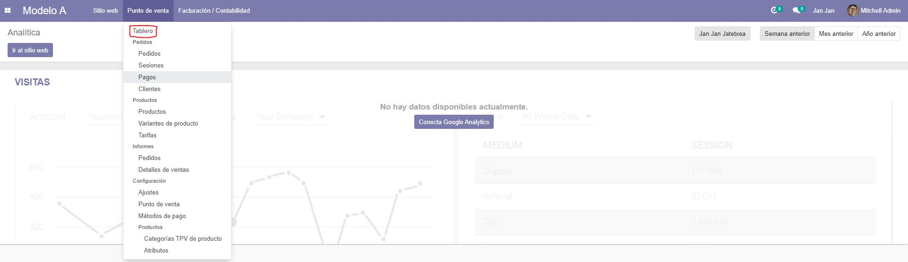
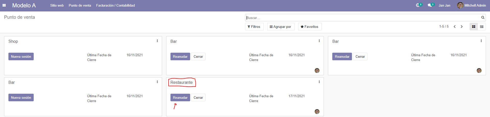
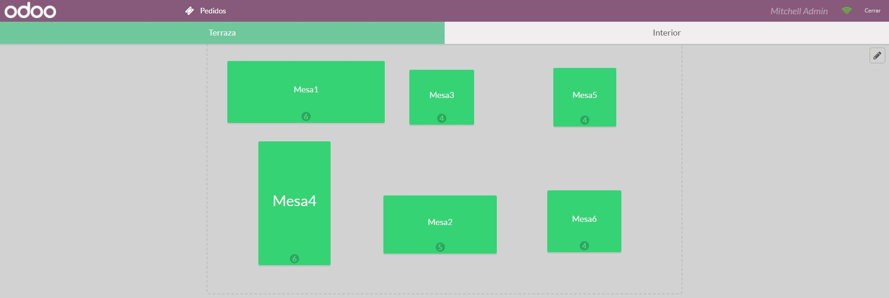
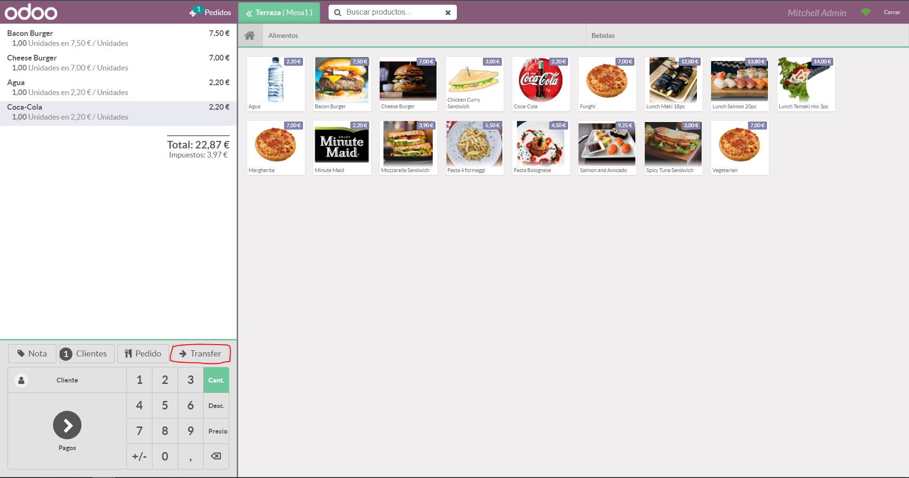

En el menú principal nos situamos encima de Punto de venta y pinchamos encima.
Tendremos un menú despegable donde clickaremos en Tablero.
Nos aparecerá un menú con los distintos puntos de venta. Elegimos el de Restaurante y los Reanudamos en caso de que esté abierto el proceso o si no, lo Creamos.
Encontraremos la designación de las mesas para Terraza o Interior. Seleccionamos la que deseemos y realizamos un pedido.
Dentro de la cabecera de pedido encontramos la opción Transfer. Clickamos y nos dejará elegir a la mesa que deseamos transferir el cliente.
